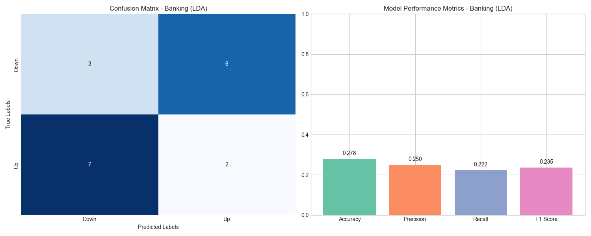

Results
Key Visualizations

Confusion Matrix - Banking Sector
Shows the model's performance in predicting up and down days in the banking sector.

ROC Curve - Technology Sector
Illustrates the tradeoff between sensitivity and specificity for the SVM model on tech stocks.
Explore All Visualizations
We've generated comprehensive visualizations for all sectors and models to help interpret the results.
View the Complete Visualization GalleryPerformance Analysis
Our models showed varying degrees of success across different sectors:
- Technology Sector: Showed the highest predictability, with SVM achieving up to 68% accuracy. Common predictive terms included "innovation," "earnings," and "growth."
- Banking Sector: Moderate predictability with 62% accuracy using LDA. Important features included "rates," "fed," and "inflation."
- Agriculture Sector: Lower predictability with 58% accuracy, likely due to less Reddit coverage.
- Arms & Defense: Strong correlation between geopolitical terms and stock movements, with 65% accuracy using Neural Networks.
- Chemical Sector: Lowest predictability among the sectors studied, suggesting Reddit sentiment may be less influential in this sector.